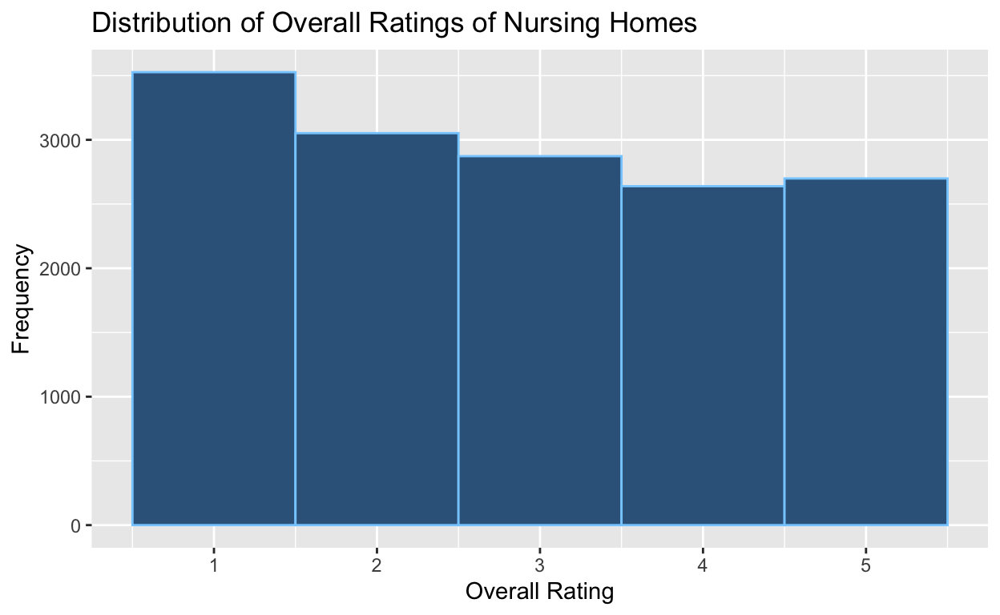

My final project
In the realm of healthcare, the quality of care provided in nursing homes is a critical concern, particularly given the vulnerable population they serve. This project delves into a pivotal research question: “How does the ownership type of nursing homes affect their quality of care?” At the heart of this inquiry lies the hypothesis that nursing homes operated by for-profit organizations provide a lower quality of care than those compared to those managed by the government and non-profit entities. Understanding the impact of ownership on care quality can inform policy decisions, guide regulatory frameworks, and ultimately enhance the well-being of elderly residents. By scrutinizing the intersection between ownership type and care quality, this project aims to contribute to the ongoing discourse on optimizing healthcare in eldercare facilities.
My data is sourced from the Centers for Medicaid & Medicare Services (CMS), which is a federal agency within the United States Department of Health and Human Services. CMS rigorously conducts inspections and maintains records for all nursing homes within the United States. I used the dataset titled “NH_ProviderInfo_Oct2023.csv”, which is a list of 14,944 currently active nursing homes that includes both general information about the nursing home as well as its score across a number of quality metrics. My research design is cross-sectional because I am analyzing ratings and characteristics of nursing homes at a single point in time, that being October of this year. My key independent variable is one that I created, titled Umbrella, which refers to the type of the organization that operates the nursing home. These organizations are categorized into government, non-profit, and for-profit. To create the Umbrella variable, I simplified the Ownership Type variable that CMS provided, which specified the exact nature of the nursing home’s ownership, such as whether it was run by a for-profit corporation, individual, limited liability company, or partnership. These original detailed ownership types are typically identified through administrative records, business filings, or self-reported data by the nursing homes. By categorizing the specific types of ownership into broader groups, I could more easily investigate how these generalized ownership types relate to the overall rating of nursing homes. I felt that the overarching trends and patterns that I wanted to identify might be obscured by the granularity of the original Ownership Type variable. While Umbrella was my main predictor variable, I also analyzed how three other factors (state, facility size, and staffing levels) were associated with the overall quality rating of nursing homes. The State variable refers to the state in which the nursing home is located and is used as a categorical variable, with each state representing a category. The Number of Certified Beds is a continuous variable indicating the size of the nursing home, and is usually obtained from administrative records and regulatory filings of the nursing homes. Finally, Reported Licensed Staffing Hours per Resident Per Day is a continuous variable representing the staffing level, and is typically collected through mandatory reporting requirements. Licensed staffing refers to both registered nurses and licensed practical nurses.
My key dependent variable is the Overall Rating of nursing homes. This variable is measured using CMS’ “Five-Star Quality Rating System,” which assigns a nursing home a rating between 1 and 5 stars, with more stars indicating higher quality. A nursing home’s overall rating is an aggregate score based on the its ratings for health inspections, quality measures, and staffing, which are also rated on a scale ranging from 1 to 5 stars. The health inspection ratings are calculated from surveys over the past three years, with more recent surveys being weighted more heavily. The quality measure ratings are calculated from a nursing home’s reported performance on 10 quality measures. The staffing measures are derived from third-party data.
Below is a histogram that summarizes the distribution of the dependent variable.

The most common rating is 1, with 3,527 nursing homes receiving this score. There are 3,052 2-star nursing homes, 2,873 3-star ones, 2,639 4-star ones, and 2,699 5-star ones. The distribution of the overall ratings appears roughly uniform with a slight left skewness as indicated by the mean (2.86) being marginally lower than the median (3).
| Umbrella | Average Overall Rating |
|---|---|
| For-profit | 2.64 |
| Government | 3.26 |
| Non-profit | 3.44 |
The bar plot depicts the mean overall ratings for nursing homes categorized by their ownership type. The corresponding table below the plot provides the exact numerical values of these average ratings. From the plot, it is apparent that non-profit nursing homes have the highest average overall rating (3.44/5 stars), followed by government (3.26/5 stars), and then for-profit nursing homes have the lowest average rating (2.64/5 stars) among the three categories.
In addition to this visualization, I performed a regression analysis for a more nuanced understanding of this relationship. The regression analysis goes beyond the barplot by controlling for three additional factors in an attempt to isolate the effect of ownership type on the quality of care. These three factors were State, Number of Certified Beds, and Reported Licensed Staffing Hours per Resident per Day. I thought that the quality of care might vary by state due to differences in regulation, funding, and availability of skilled staff. In addition, I wanted to control for the size of the facility (for which I used number of certified beds as a proxy) because I thought that larger facilities might have different management practices, resources, and staffing levels, all of which would impact the quality of care. Lastly, I wanted to control for staffing levels of skilled nurses because I assumed that higher levels were associated with better care.
| (1) | |
|---|---|
| (Intercept) | 1.594 |
| s.e. = 0.320 | |
| p = <0.001 | |
| UmbrellaGovernment | 0.560 |
| s.e. = 0.048 | |
| p = <0.001 | |
| UmbrellaNon-profit | 0.592 |
| s.e. = 0.028 | |
| p = <0.001 | |
| StateAL | 0.833 |
| s.e. = 0.328 | |
| p = 0.011 | |
| StateAR | 0.881 |
| s.e. = 0.328 | |
| p = 0.007 | |
| StateAZ | 1.029 |
| s.e. = 0.334 | |
| p = 0.002 | |
| StateCA | 0.832 |
| s.e. = 0.318 | |
| p = 0.009 | |
| StateCO | 0.668 |
| s.e. = 0.328 | |
| p = 0.042 | |
| StateCT | 0.735 |
| s.e. = 0.329 | |
| p = 0.026 | |
| StateDC | 0.771 |
| s.e. = 0.452 | |
| p = 0.088 | |
| StateDE | 0.993 |
| s.e. = 0.373 | |
| p = 0.008 | |
| StateFL | 0.854 |
| s.e. = 0.320 | |
| p = 0.008 | |
| StateGA | 0.195 |
| s.e. = 0.323 | |
| p = 0.546 | |
| StateHI | 1.032 |
| s.e. = 0.379 | |
| p = 0.006 | |
| StateIA | 0.505 |
| s.e. = 0.323 | |
| p = 0.118 | |
| StateID | 0.966 |
| s.e. = 0.348 | |
| p = 0.006 | |
| StateIL | 0.454 |
| s.e. = 0.320 | |
| p = 0.155 | |
| StateIN | 0.537 |
| s.e. = 0.321 | |
| p = 0.094 | |
| StateKS | 0.432 |
| s.e. = 0.325 | |
| p = 0.183 | |
| StateKY | 0.446 |
| s.e. = 0.326 | |
| p = 0.171 | |
| StateLA | 0.036 |
| s.e. = 0.326 | |
| p = 0.912 | |
| StateMA | 0.620 |
| s.e. = 0.323 | |
| p = 0.055 | |
| StateMD | 0.473 |
| s.e. = 0.328 | |
| p = 0.149 | |
| StateME | 0.600 |
| s.e. = 0.346 | |
| p = 0.083 | |
| StateMI | 0.761 |
| s.e. = 0.322 | |
| p = 0.018 | |
| StateMN | 0.539 |
| s.e. = 0.323 | |
| p = 0.096 | |
| StateMO | 0.471 |
| s.e. = 0.322 | |
| p = 0.144 | |
| StateMS | 0.126 |
| s.e. = 0.329 | |
| p = 0.702 | |
| StateMT | 0.329 |
| s.e. = 0.359 | |
| p = 0.360 | |
| StateNC | 0.313 |
| s.e. = 0.322 | |
| p = 0.331 | |
| StateND | 0.460 |
| s.e. = 0.352 | |
| p = 0.191 | |
| StateNE | 0.492 |
| s.e. = 0.330 | |
| p = 0.136 | |
| StateNH | 0.431 |
| s.e. = 0.351 | |
| p = 0.219 | |
| StateNJ | 0.971 |
| s.e. = 0.324 | |
| p = 0.003 | |
| StateNM | 0.603 |
| s.e. = 0.355 | |
| p = 0.089 | |
| StateNV | 0.606 |
| s.e. = 0.357 | |
| p = 0.089 | |
| StateNY | 0.834 |
| s.e. = 0.321 | |
| p = 0.009 | |
| StateOH | 0.432 |
| s.e. = 0.319 | |
| p = 0.175 | |
| StateOK | 0.639 |
| s.e. = 0.326 | |
| p = 0.050 | |
| StateOR | 0.648 |
| s.e. = 0.337 | |
| p = 0.055 | |
| StatePA | 0.462 |
| s.e. = 0.320 | |
| p = 0.148 | |
| StatePR | −1.020 |
| s.e. = 0.617 | |
| p = 0.098 | |
| StateRI | 0.946 |
| s.e. = 0.352 | |
| p = 0.007 | |
| StateSC | 0.499 |
| s.e. = 0.330 | |
| p = 0.130 | |
| StateSD | 0.597 |
| s.e. = 0.344 | |
| p = 0.083 | |
| StateTN | 0.335 |
| s.e. = 0.324 | |
| p = 0.302 | |
| StateTX | 0.337 |
| s.e. = 0.318 | |
| p = 0.290 | |
| StateUT | 0.899 |
| s.e. = 0.342 | |
| p = 0.009 | |
| StateVA | 0.377 |
| s.e. = 0.325 | |
| p = 0.245 | |
| StateVT | 0.317 |
| s.e. = 0.390 | |
| p = 0.416 | |
| StateWA | 0.737 |
| s.e. = 0.329 | |
| p = 0.025 | |
| StateWI | 0.567 |
| s.e. = 0.324 | |
| p = 0.080 | |
| StateWV | 0.175 |
| s.e. = 0.337 | |
| p = 0.604 | |
| StateWY | 0.507 |
| s.e. = 0.390 | |
| p = 0.194 | |
| Number of Certified Beds | −0.004 |
| s.e. = 0.000 | |
| p = <0.001 | |
| Reported Licensed Staffing Hours per Resident per Day | 0.614 |
| s.e. = 0.021 | |
| p = <0.001 | |
| Num.Obs. | 14306 |
| R2 | 0.182 |
| R2 Adj. | 0.179 |
The intercept (1.594) is the expected average overall rating for the baseline group, which in my case is for-profit nursing homes in the state of Alaska, when the Number of Certified Beds and Reported Licensed Staffing Hours per Resident per Day are zero. While it’s important to note that the intercept is significant (p<0.001), it’s impossible for a nursing home to have zero beds or staffing hours. Thus, the practical interpretation of the intercept is limited to being a part of the baseline against which other groups’ ratings are compared.
The coefficients for UmbrellaGovernment and UmbrellaNon-profit suggest that, holding other factors constant, government and non-profit nursing homes are rated higher than for-profit ones by approximately 0.56 and 0.59 points, respectively. The size of the coefficients is practically significant, indicating that the type of ownership is associated with a noticeable difference in ratings. These coefficients are statistically significant (p<0.001), suggesting that there is strong evidence to conclude that the observed positive relationship between government/non-profit nursing homes and higher overall rating is not occurring by chance. While the statistical significance gives me confidence in the reliability of these associations, the cross-sectional nature of the data limits the ability to infer direct causality. A before-and-after study whereby nursing homes changed ownership, for example, would ideally be necessary to assert causal effects.
When considering the impact of states, we see varied coefficients, which imply that the location of a nursing home within the United States also influences its overall rating. For example, the coefficient for StateAL is 0.833 with a p-value of 0.011, suggesting that nursing homes in Alabama are rated higher than nursing homes in Alaska by approximately 0.83 points (holding all other variables constant), and that this result is statistically significant. On the other hand, the coefficient for StatePR (Puerto Rico) is -1.020 with a p-value of 0.098, suggesting a potential lower rating for nursing homes in Puerto Rico compared to Alaska (holding all other variables equal), but we cannot be as confident about this result because the p-value is 0.098.
The coefficients for Number of Certified Beds and Reported Licensed Staffing Hours per Resident per Day are -0.004 and 0.614, respectively. Both are statistically significant (p<0.001), indicating that as the number of beds increases, the overall rating slightly decreases, and as the staffing hours increase, the overall rating significantly increases. This suggests a larger facility may face challenges in maintaining higher quality care, while more staffing hours contribute positively to the quality of care.
The analysis conducted on nursing home quality ratings revealed notable insights into how different factors influence these ratings. My hypothesis that non-profit and government-owned nursing homes provide better quality of care than for-profit ones found substantial support. Based on the coefficients from my regression analysis, non-profit nursing homes have an average overall rating that is approximately 37.14% higher than for-profit ones, while government-owned nursing homes have an average rating about 35.13% higher than for-profit ones. Additionally, this model indicated that location (state) and staffing hours positively correlate with higher ratings, while larger facilities (more beds) tend to have slightly lower ratings. There are some potential limitations to my study that should not be ignored. As I mentioned in my results section, while the cross-sectional design is useful for identifying associations at a particular time, it is limited in its ability to infer causality. Additionally, there is the threat of unmeasured confounders. For instance, factors like patient demographics and facility age/infrastructure, which could influence ratings, were not included in the dataset, and therefore, were not included in my regression model. With additional resources, I believe my analysis could be enhanced by incorporating longitudinal data to track changes in nursing homes over time. This would allow me to observe how the quality of care in nursing homes evolve over time, which I could then correlate with changes in ownership. Longitudinal data would also enable me to examine lagged effects of ownership changes on quality metrics.